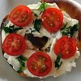

-

-

Queenie's Killer Tomato Bagel Sandwich
Ingredients
- 1 bagel, split and toasted
- 2 tablespoons cream cheese
- 1 roma (plum) tomatoes, thinly sliced
- salt and pepper to taste
- 4 leaves fresh basil
-

-

-
Life is conversational. Web design should be the same way. On the web, you’re talking to someone you’ve probably never met so it’s important to be clear and precise. Thus, well structured navigation and content organization goes hand in hand with having a good conversation.
-